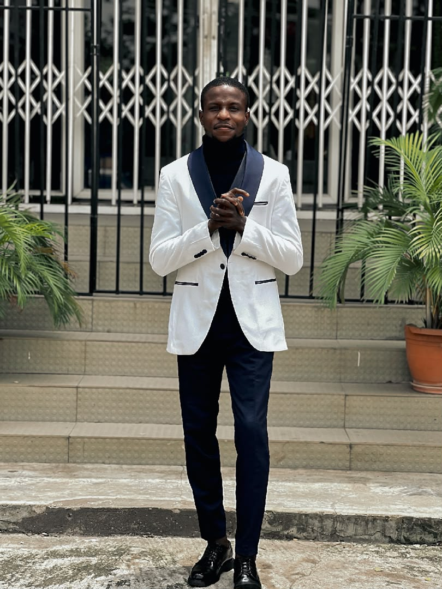

At Ryan’s Secondary School, our mission is to provide a holistic education that nurtures both academic excellence and personal growth. As a boarding school, we are dedicated to creating a safe, supportive, and inspiring environment where students can thrive intellectually, socially, and emotionally. We believe that education should not only prepare students for examinations but also equip them with the skills, values, and confidence to face life’s challenges. We strive to instill in our learners the values of respect, integrity, and responsibility. Every student is encouraged to embrace curiosity, pursue knowledge, and develop resilience. Our mission is to shape individuals who are not only successful in their studies but also compassionate, ethical, and ready to contribute positively to their communities and the world at large.
Our vision is to be a leading boarding school recognized for shaping well-rounded individuals who excel in academics, leadership, and character. We aspire to empower students with the mindset and skills needed to succeed in higher education, future careers, and beyond. At Ryan’s Secondary School, we envision a community where every learner is encouraged to discover their passions, embrace diversity, and develop a lifelong love of learning. We see education as a transformative journey—one that inspires students to dream big, think critically, and act responsibly. Our vision is to cultivate graduates who are not only knowledgeable but also innovative, compassionate, and prepared to make a meaningful impact in society.
Ryan’s Secondary School was founded with the belief that education should extend beyond the classroom. From humble beginnings, the school has grown into a vibrant boarding institution known for its commitment to excellence, discipline, and community. Over the years, we have built a proud tradition of academic achievement, extracurricular success, and strong values that continue to guide us today. Our history is marked by the countless students who have passed through our doors, each leaving with not only knowledge but also the confidence and character to shape their futures. Generations of learners have called Ryan’s Secondary School their second home, forming lifelong friendships and memories within our boarding community. Through dedication, innovation, and resilience, Ryan’s Secondary School has evolved into a place where tradition meets progress. While we honor our roots and the values upon which we were founded, we continue to embrace modern teaching methods, technology-driven learning, and forward-thinking approaches that prepare our students for the demands of the future.

At Ryan’s Secondary School, we are committed to nurturing excellence in both academics and character. As a boarding school, we provide a safe and supportive environment where students grow in independence, resilience, and responsibility. Our goal is to inspire young people to dream boldly, learn passionately, and leave prepared to make a positive impact in the world.